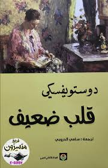

🔙
قلب ضعيف💔 - فيودور دوستوفيسكي


نبذة عن الرواية
وهي رواية غير مشهورة له مقارنة بأعماله الكبيرة مثل “الجريمة والعقاب”. الرواية تتكلم عن رجل موظف بسيط رئيسه في العمل أعطاه مهمة كبيرة، لكنه كان مشغول بأشياء في حياته فتراكم عليه الضغط النفسي، وبدأ يعاني من اكتئاب وخوف وتوتر.
رأيي الشخصي
الروايه سمعتها كتاب صوتي وما قرأتها ، كان بصوت القارئه مريم عاصم فاليوتيوب ، الروايه رغم انه ماقردتها ،بسحبيتها بشكل وانقهرت من الشخصيه الرئيسيه بشكل ، و ترني بشكل وخوفني من اشياء جدا بسيطه ، الروايه قصيريه فتقدر تخلصها بسرعه ، ولان اكنت ارسم وانا ساتمع لذي القصه فعلقت في مخي بشكل، يجي في بالي سؤال معقوله في ناس بتتأثر لذي الدو
الاقتباسات
"لايوجد"
💬 تعليقات القراء